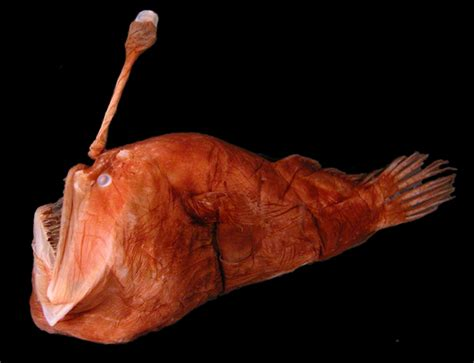

The deep sea's own lantern-bearer, famous for the glowing lure on its head.

The anglerfish is instantly recognisable by the glowing lure, called an esca, that dangles from its head. The light isn't produced by the fish itself, it comes from colonies of bioluminescent bacteria living inside the lure, in a partnership that draws curious prey close enough to be swallowed whole.
Anglerfish have enormous mouths and stomachs relative to their body size, letting them eat prey almost as large as themselves, a useful trait in the deep sea where meals are few and far between.
One of the strangest facts about anglerfish is how the males reproduce. In several deep sea species, the male is a tiny fraction of the female's size. When he finds a mate, he bites into her body and physically fuses to her, eventually losing his eyes and internal organs and surviving purely as an attached parasite that supplies sperm on demand.
Most anglerfish live between 300 and 5,000 metres down, in total darkness where their lure gives them one of the only sources of light for miles.
← Back to Creatures of the Deep